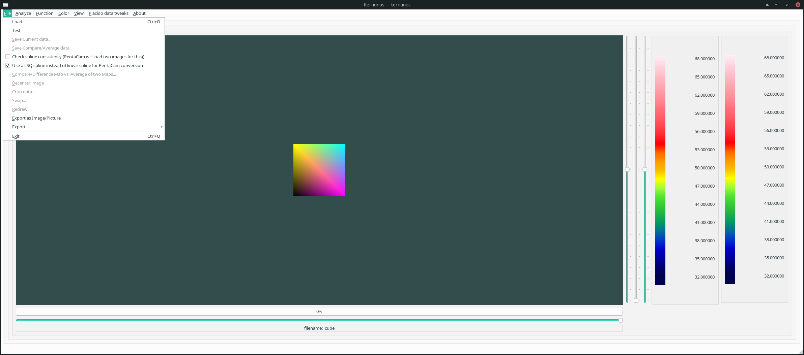
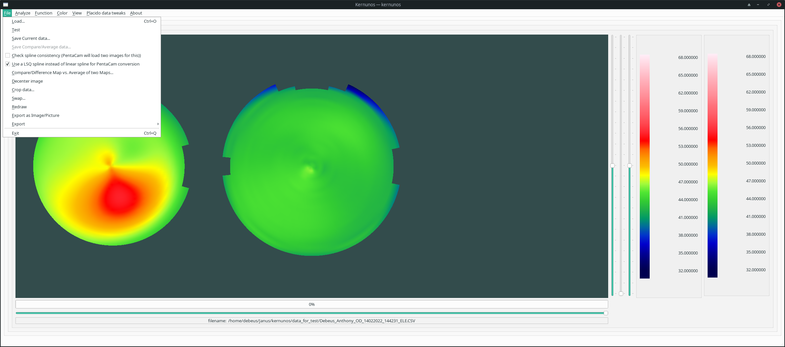
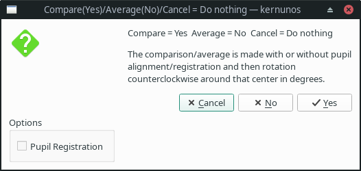
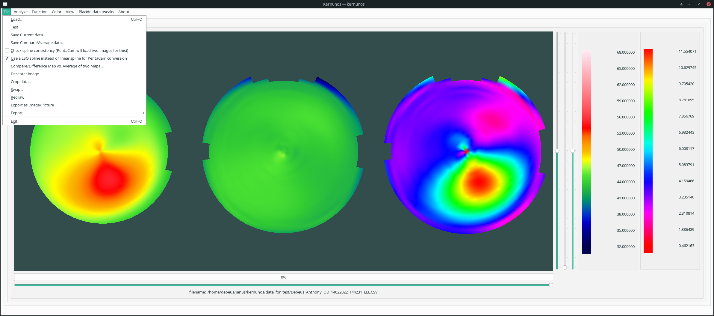

Use Load from the File Menu to select a file. Only five machine types are currently supported. Note that the Zeiss Atlas CSV filter is non-specific and may include non-Atlas CSV files and that for EyeSys or NIDEK files the corresponding XX,ED, PU,PE AND HDR,HT files will be read when opening an RA file, and the corresponding RA, PU,PE and HDR,HT files will be read when opening an XX or ED file. Corresponding RA and XX or ED files must be present to read, PU,PE and HDR or HT files are optional and contain pupil data and header or elevation data respectively. Some Atlas files may contain pre-existing Zernike coefficients, which are read if present. Reading a Oculus PentaCam CUR can be done with a concurrent read of a corresponding ELE file, if present. Oculus Keratograph files can be read as the interpolated or non interpolated versions. When applicable I have tried to support compressed versions of files as well as uncompressed versions. You can also use Test to generate a ellipsoidal curved surface mathematically to see the difference in viewing modes under ideal circumstances without the pesky limitations of real data.
 |
By default the menu will search for all files (*) in the current directory (the directory the application is run from).
Two files have been previously loaded using Load. Note that the right most legend is for the comparison, while the left most legend is for the central image. Note also that the Save item is now available for both the central frame data but not the compare data.
 |
Using the Compare/Average option brings up the following dialog box
 |
The example below shows the effect of the Compare operation. Two files have been previously loaded using Load. Note that the right most legend is for the comparison, while the left most legend is for the central image. Note also that the Save items are now available for both the central frame data and the compare data
 |